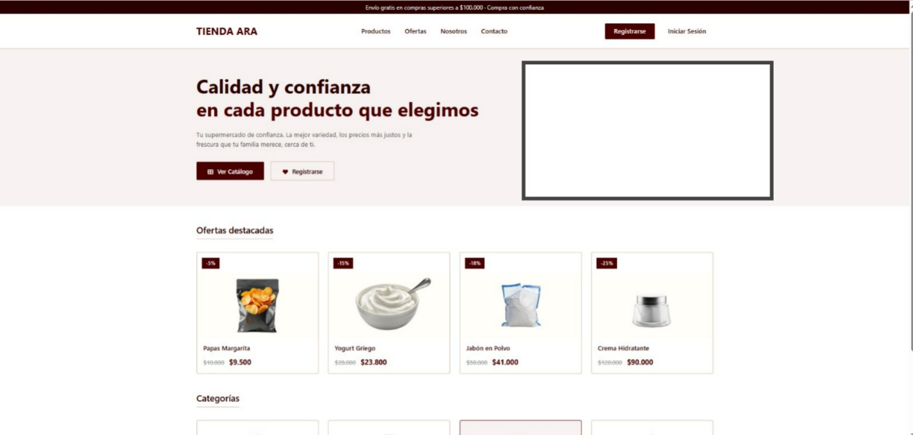

Nicoll Stefany Alvarez Rojas
"Bienvenido a mi pagina web"
Soy Nicoll Alvarez aprendiz del programa Análisis y Desarrollo de Software o más conocido como ADSO. Me apasiona transformar ideas en programas y páginas que sirvan a otras personas.
Conoce mi perfilSobre mí
Soy una persona demasiado curiosa, me gusta resolver problemas y crear cosas nuevas. Elegí ADSO porque quiero saber cómo funcionan las aplicaciones y poder programar las mías propias. Me interesa aprender a hacer páginas web, manejar bases de datos y desarrollar aplicaciones que faciliten la vida de las personas.
Mi meta es convertirme en Ingeniera de sistemas y seguir aprendiendo cada día.
Mis Habilidades
Lógica de Programación
Me gusta buscar soluciones a los problemas y aprender a resolverlos paso a paso.
Creatividad
Me gusta tener nuevas ideas y buscar formas de hacer que mis proyectos se vean bien.
Desarrollo web
Estoy aprendiendo a crear páginas web con HTML y CSS, combinando diseño y funcionalidad.
Trabajo en equipo
Me gusta escuchar las ideas de los demás, compartir las mías y aprender trabajando con otras personas.
Responsabilidad y aprendizaje
Trato de cumplir con mis actividades, aprender de mis errores y mejorar cada día en lo que hago.
Bases de datos
Estoy aprendiendo a organizar información y hacer consultas para manejar los datos de una aplicación.
Mis Proyectos
Supermercado El Ara

Objetivo: Diseñar y desarrollar un sistema de información para gestionar el registro de productos, ventas y clientes del supermercado, con el fin de organizar y controlar su inventario y movimientos comerciales.
Descripción: Fue un trabajo grupal donde analizamos el funcionamiento del supermercado, identificamos sus necesidades y diseñamos la estructura de datos y procesos. Definimos las entidades principales, sus relaciones y creamos los diagramas y documentos necesarios para representar el sistema. El proyecto permitió entender cómo se aplica la tecnología en el entorno comercial.
Tecnologías: Lógica de programación, análisis de sistemas, diagramación, bases de datos.
Mi participación: Participé en la recolección de información, definí la estructura de algunos datos, organicé partes del contenido y colaboré en la redacción y presentación del proyecto en equipo.
Contacto
Puedes escribirme a:
NSAR@soy.sena.edu.co